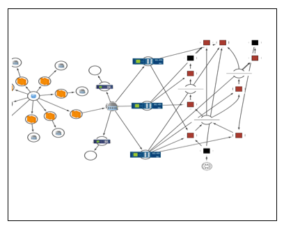
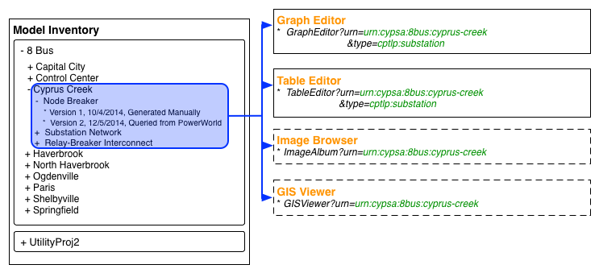

CyPSA Framework Views
There are several different ways to view the information provided by the CyPSA Data Management Layer and analytic services. This document briefly illustrates a few.
Analysis Workbench
The CyPSA Analysis Workbench allows one to analyze CyPSA-inventoried assets:
- Select a model
- Select an analysis
- Populate analysis template with inputs
- Get analysis output (table or graph)
Graph Editor
Graph Editor allows one to browse CyPSA-inventoried assets graphically.
Model Inventory Editor
The model inventory editor allows one to hierarchically browse and modify hierarchical data.
Table Editor
Table editor allows one to browse CyPSA-inventoried assets or the results of an analysis via a spreadsheet-style form.